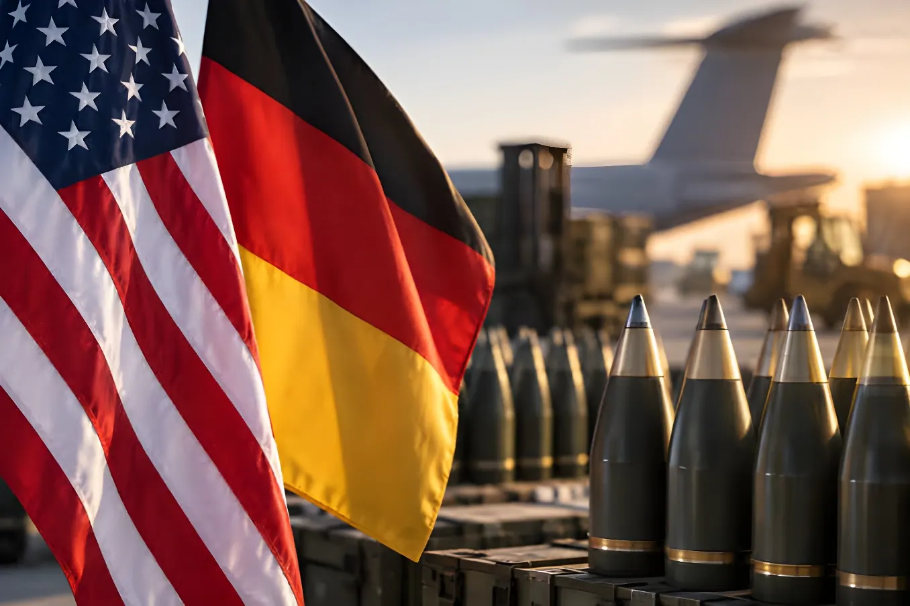

Mardi 15 septembre 2026, à Washington, le ministre allemand de la Défense Boris Pistorius et son homologue américain Pete Hegseth ont signé une déclaration d'intention destinée à approfondir la coopération industrielle entre les deux pays dans le secteur de l'armement. Production sous licence de missiles Patriot, coopération sur les avions de combat F-35, acquisition de missiles de croisière Tomahawk : cet accord politique vient consolider une série de partenariats déjà noués ces dernières semaines entre industriels allemands et américains, alors que Washington cherche à reconstituer ses stocks de munitions et que Bruxelles tente, à l'inverse, de limiter les achats d'armement hors de l'Union européenne.
Reçu au Pentagone le 15 septembre, Boris Pistorius a signé avec Pete Hegseth une lettre d'intention établissant, selon les mots du ministre allemand, une « coopération plus étroite dans le domaine de l'armement ». Le texte prévoit notamment que des équipements de défense américains pourront être produits en Allemagne si les capacités industrielles des États-Unis se révèlent insuffisantes pour répondre à une forte demande. Pour M. Pistorius, l'objectif est de « nous rapprocher dans les domaines où nous avons des besoins mutuels » afin que les deux pays tirent profit du renforcement de leurs industries de défense respectives.
Le ministre allemand a mis en avant les bénéfices attendus pour la Bundeswehr : une production accrue et plus rapide, des stocks reconstitués et des chaînes d'approvisionnement optimisées. Les discussions à Washington ont également porté sur la coopération concernant les avions de combat F-35, la production en Allemagne de missiles Patriot utilisés par les systèmes de défense antiaérienne, ainsi que l'acquisition par Berlin de missiles de croisière Tomahawk et de lanceurs Typhon, pour lesquels le gouvernement allemand aurait prévu une enveloppe de 3,4 milliards d'euros.
Association pour produire en Allemagne le missile sol-sol ATACMS et proposer sur le marché européen le lance-roquettes GMARS, dérivé du HIMARS américain.
Le groupe de Düsseldorf envisage de coproduire la nouvelle munition d'artillerie Vektrex avec l'industriel américain.
Rapprochement en vue de la fabrication de missiles antiaériens Stinger sur le sol allemand.
Déjà engagée, sur le même modèle, dans la production locale des missiles intercepteurs GEM-T.
Ce rapprochement intervient à point nommé pour les États-Unis : la guerre menée face à l'Iran a creusé les stocks stratégiques de munitions américains et mis en lumière les difficultés de l'industrie de défense à les reconstituer rapidement. Washington cherche ainsi à rapprocher sa propre réforme des acquisitions militaires du « Procurement Acceleration Act » allemand, afin d'accélérer la montée en puissance des capacités industrielles des deux pays. Le ministère allemand de la Défense souligne de son côté que les États-Unis demeurent un « partenaire essentiel » au développement des capacités de la Bundeswehr, et que l'Allemagne « crée en retour des emplois aux États-Unis », grâce à d'importantes commandes déjà passées par Berlin : avions de patrouille maritime P-8A Poseidon, drones MQ-9B SeaGuardian, chasseurs-bombardiers F-35A et hélicoptères CH-47 Chinook.
Ce climat plus apaisé tranche avec celui du début d'année : sous l'administration Trump, Washington avait vivement critiqué la politique de défense allemande, et en mai 2026 les États-Unis avaient annoncé le retrait de 4 000 à 5 000 soldats stationnés en Allemagne. Le ton a toutefois évolué depuis : lors d'un sommet de l'OTAN à Bruxelles le mois dernier, le sous-secrétaire américain à la Défense Elbridge Colby avait salué une « transformation historique » côté allemand.
| Acteur | Position |
|---|---|
| Boris Pistorius (SPD) | Ministre fédéral de la Défense d'Allemagne |
| Pete Hegseth | Secrétaire à la Défense des États-Unis |
| Elbridge Colby | Sous-secrétaire américain à la Défense chargé de la politique |
| Armin Papperger | PDG de Rheinmetall, partenaire industriel de Lockheed Martin |
« L'Allemagne doit mettre à contribution sa très grande industrie historique. »
— Pete Hegseth, secrétaire américain à la Défense, 15 septembre 2026Au-delà des programmes cités par les deux ministres, l'accord confirme une tendance déjà observée cette année, avec l'accord de juillet sur les Tomahawk conclu en marge du sommet de l'OTAN d'Ankara, ou encore l'enterrement, en juin, du programme européen d'avion de combat SCAF. Pour Berlin, l'argument est celui de l'efficacité et de la rapidité de rearmement de la Bundeswehr ; pour ses critiques, notamment en France, ce choix risque de fragiliser les efforts de consolidation d'une base industrielle et technologique de défense proprement européenne, au moment même où l'Union tente de s'en doter.
En l'espace de quelques mois, l'Allemagne a multiplié les gestes vers Washington : accord sur les Tomahawk en juillet, partenariats entre Rheinmetall, Diehl ou MBDA et leurs homologues américains, puis cette déclaration d'intention du 15 septembre. Ce choix d'un réarmement rapide, adossé à l'industrie américaine, s'inscrit en contrepoint des ambitions européennes d'autonomie stratégique portées par la Commission et par certains partenaires, à commencer par la France, et devrait continuer de peser sur les discussions relatives à l'avenir de l'industrie de défense du continent.
Am Dienstag, den 15. September 2026, unterzeichneten Bundesverteidigungsminister Boris Pistorius und sein US-amerikanischer Amtskollege Pete Hegseth in Washington eine Absichtserklärung zur Vertiefung der industriellen Zusammenarbeit beider Länder im Rüstungsbereich. Lizenzproduktion von Patriot-Flugabwehrraketen, Kooperation beim F-35-Kampfjet, Erwerb von Tomahawk-Marschflugkörpern: Das politische Abkommen bekräftigt eine Reihe von Partnerschaften, die deutsche und amerikanische Rüstungskonzerne in den vergangenen Wochen bereits geschlossen haben – zu einem Zeitpunkt, an dem Washington seine Munitionsbestände wieder auffüllen will, während Brüssel umgekehrt versucht, Rüstungskäufe außerhalb der EU einzuschränken.
Am 15. September im Pentagon empfangen, unterzeichnete Boris Pistorius mit Pete Hegseth eine Absichtserklärung, die nach Worten des deutschen Ministers eine „engere Kooperation im Rüstungsbereich" schafft. Der Text sieht insbesondere vor, dass amerikanische Verteidigungsgüter in Deutschland produziert werden können, sollten die US-Produktionskapazitäten angesichts hoher Nachfrage nicht ausreichen. Ziel sei es, so Pistorius, sich „in Bereichen anzunähern, in denen es gegenseitigen Bedarf gibt", damit beide Länder vom Ausbau ihrer jeweiligen Verteidigungsindustrie profitieren.
Der Minister hob die erwarteten Vorteile für die Bundeswehr hervor: eine höhere und schnellere Produktion, wieder aufgefüllte Bestände und optimierte Lieferketten. Die Gespräche in Washington betrafen zudem die Kooperation beim Kampfjet F-35, die geplante Produktion von Patriot-Flugabwehrraketen in Deutschland sowie den Erwerb von Tomahawk-Marschflugkörpern und Typhon-Startsystemen durch Berlin, für die die Bundesregierung Berichten zufolge 3,4 Milliarden Euro eingeplant hat.
Kooperation zur Produktion der ATACMS-Boden-Boden-Rakete in Deutschland und zum Angebot des HIMARS-Abkömmlings GMARS auf dem europäischen Markt.
Der Düsseldorfer Konzern erwägt die gemeinsame Produktion der neuen Artilleriemunition Vektrex mit dem amerikanischen Hersteller.
Annäherung im Hinblick auf die Fertigung von Stinger-Flugabwehrraketen auf deutschem Boden.
Bereits nach demselben Modell in die lokale Produktion der GEM-T-Abfangraketen eingebunden.
Diese Annäherung kommt für die USA zum richtigen Zeitpunkt: Der Krieg gegen den Iran hat die strategischen Munitionsbestände der USA aufgezehrt und die Schwierigkeiten der Verteidigungsindustrie offengelegt, diese rasch wieder aufzufüllen. Washington versucht daher, seine eigene Reform der Rüstungsbeschaffung dem deutschen „Procurement Acceleration Act" anzunähern, um den Kapazitätsaufbau der Industrie beider Länder zu beschleunigen. Das deutsche Verteidigungsministerium betont seinerseits, die USA blieben ein „wesentlicher Partner" für den Fähigkeitsaufbau der Bundeswehr, und Deutschland schaffe im Gegenzug „Arbeitsplätze in den USA" – dank umfangreicher Aufträge, die Berlin bereits erteilt hat: P-8A-Poseidon-Seefernaufklärer, MQ-9B-SeaGuardian-Drohnen, F-35A-Kampfjets und CH-47-Chinook-Hubschrauber.
Dieses entspanntere Klima steht im Gegensatz zum Jahresbeginn: Unter der Trump-Administration hatte Washington die deutsche Verteidigungspolitik scharf kritisiert, und im Mai 2026 hatten die USA den Abzug von 4.000 bis 5.000 in Deutschland stationierten Soldaten angekündigt. Der Ton hat sich seither jedoch gewandelt: Bei einem NATO-Gipfel in Brüssel im vergangenen Monat lobte der stellvertretende US-Verteidigungsminister Elbridge Colby eine „historische Transformation" auf deutscher Seite.
| Akteur | Position |
|---|---|
| Boris Pistorius (SPD) | Bundesminister der Verteidigung |
| Pete Hegseth | US-Verteidigungsminister |
| Elbridge Colby | Stellvertretender US-Verteidigungsminister für Politik |
| Armin Papperger | Vorstandsvorsitzender von Rheinmetall, Industriepartner von Lockheed Martin |
„Deutschland muss seine große historische Industrie einbringen."
— Pete Hegseth, US-Verteidigungsminister, 15. September 2026Über die von beiden Ministern genannten Programme hinaus bestätigt das Abkommen einen bereits in diesem Jahr zu beobachtenden Trend – etwa das im Juli am Rande des NATO-Gipfels von Ankara geschlossene Tomahawk-Abkommen oder das im Juni besiegelte Ende des europäischen Kampfflugzeugprogramms SCAF. Für Berlin zählt das Argument der Effizienz und der Geschwindigkeit der Wiederaufrüstung der Bundeswehr; für die Kritiker, insbesondere in Frankreich, birgt diese Wahl das Risiko, die Bemühungen um eine eigenständige europäische Verteidigungs- und Technologiebasis zu schwächen – ausgerechnet in dem Moment, in dem die Union sich eine solche aufzubauen versucht.
Innerhalb weniger Monate hat Deutschland zahlreiche Signale nach Washington gesendet: das Tomahawk-Abkommen im Juli, Partnerschaften zwischen Rheinmetall, Diehl oder MBDA und ihren amerikanischen Pendants, und nun diese Absichtserklärung vom 15. September. Diese Entscheidung für eine schnelle, an die amerikanische Industrie angelehnte Wiederaufrüstung steht im Widerspruch zu den von der Kommission und einigen Partnern, allen voran Frankreich, verfolgten europäischen Ambitionen strategischer Autonomie – und dürfte die Debatten über die Zukunft der europäischen Verteidigungsindustrie weiter prägen.